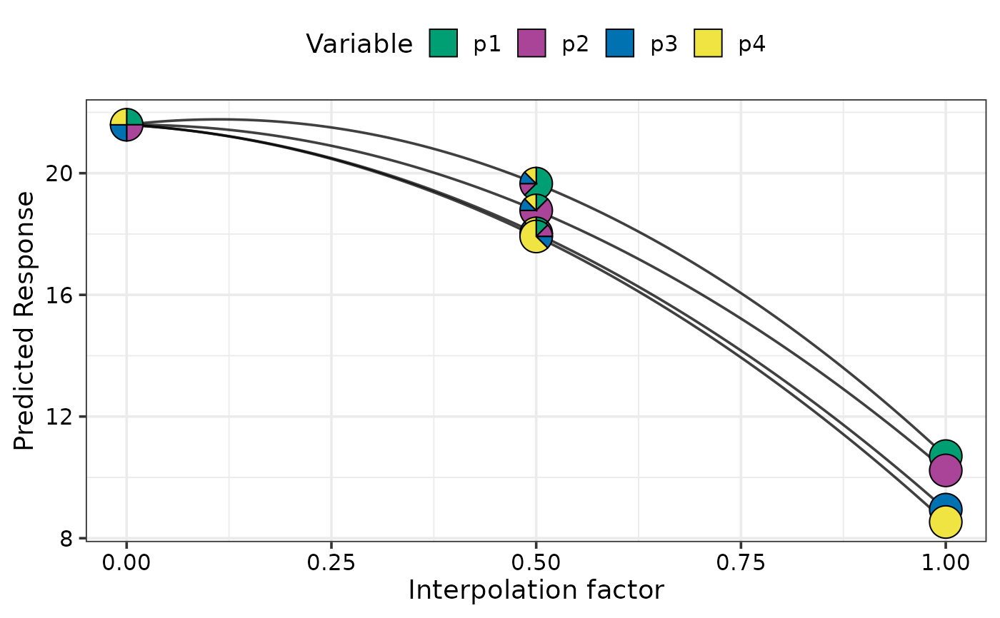
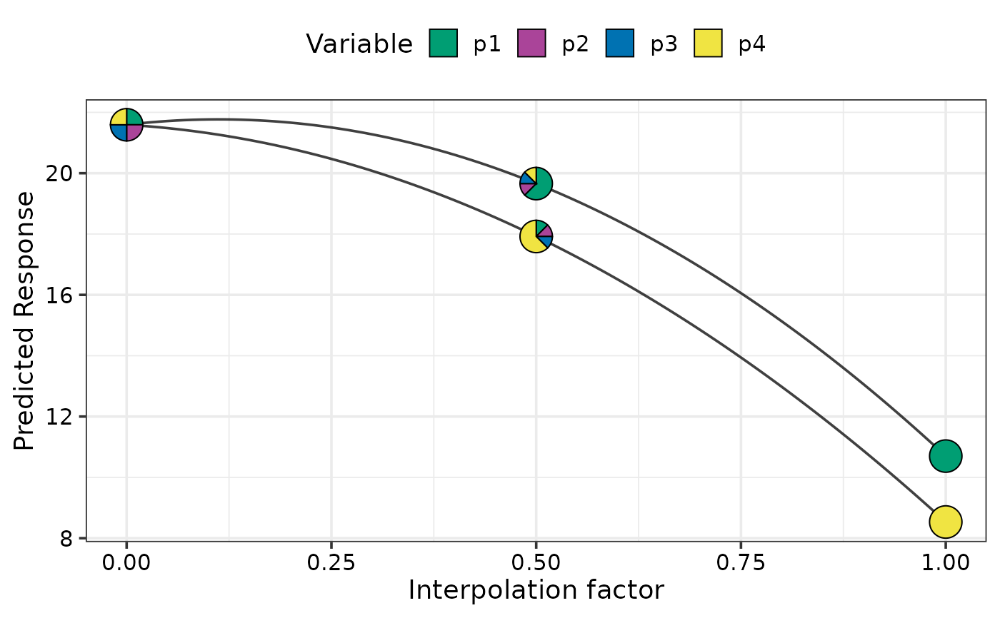
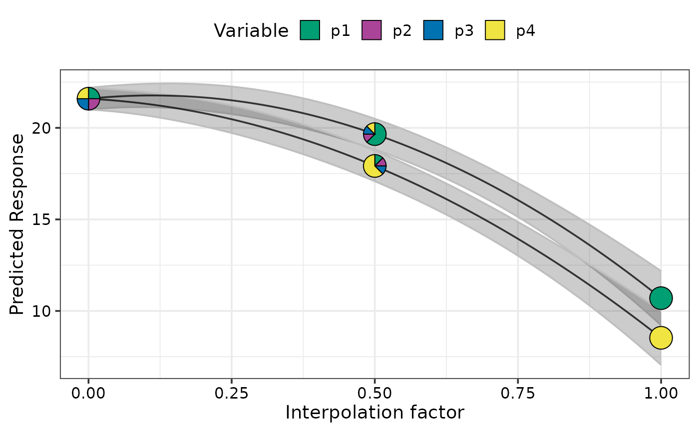
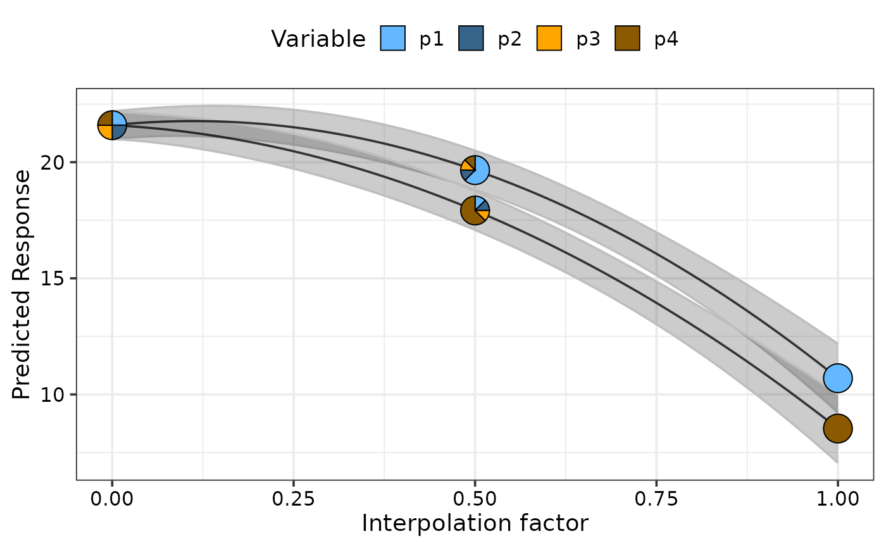
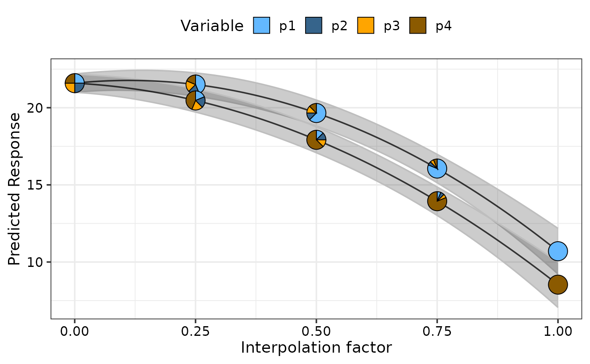
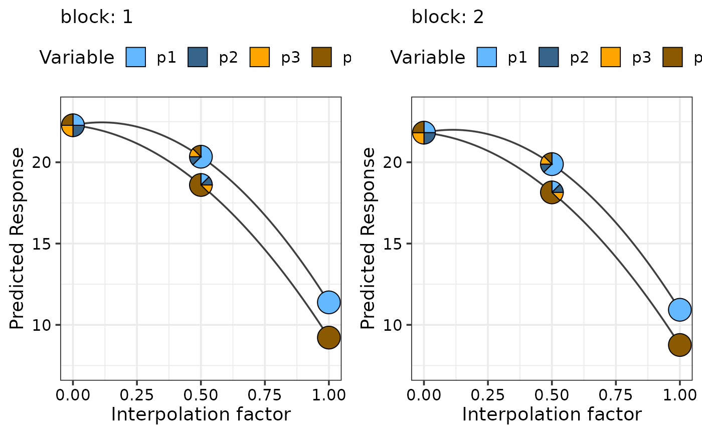
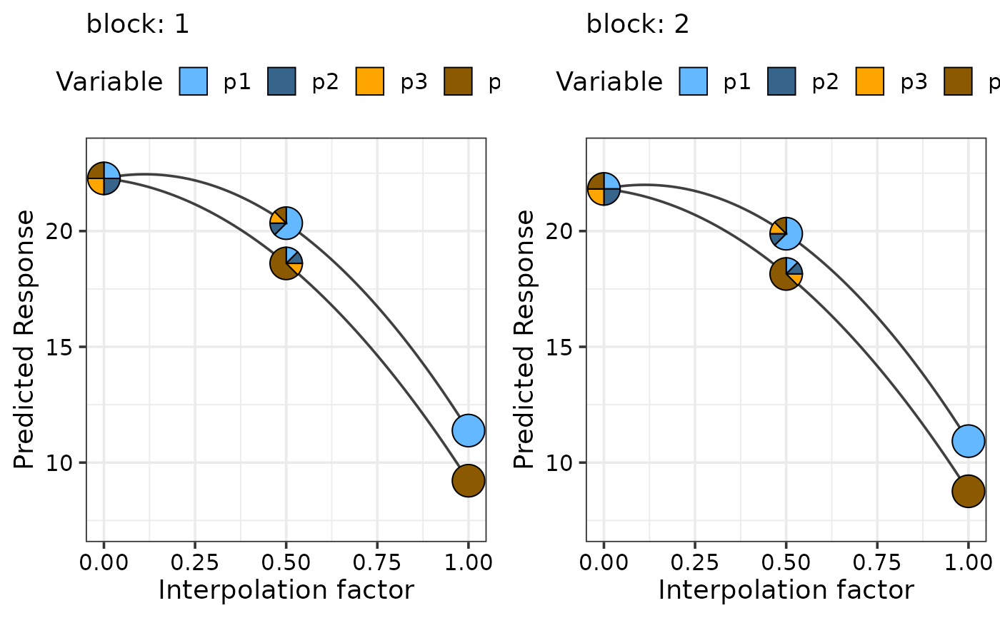

Visualising the change in a response variable between two points in the simplex space
simplex_path_plot.RdThe helper function for plotting the change in a response variable over a
straight line between two points across the simplex space. The output of the
simplex_path_data function (with any desired modifications)
should be passed here. The generated plot will show individual curves
indicating the variation in the response between the points.
`Pie-glyphs` are
used to highlight the compositions of the starting, ending and midpoint of the
straight line between the two points.
Usage
simplex_path_plot(
data,
prop = NULL,
pie_positions = c(0, 0.5, 1),
pie_colours = NULL,
se = FALSE,
facet_var = NULL,
nrow = 0,
ncol = 0
)Arguments
- data
A data frame created using the
simplex_path_datafunction.- prop
A vector of column names or indices identifying the columns containing the species proportions in the data. Will be inferred from the data if it is created using the `
simplex_path_data` function, but the user also has the flexibility of manually specifying the values.- pie_positions
A numeric vector with values between 0 and 1 (both inclusive) indicating the positions along the X-axis at which to show pie-glyphs for each curve. Default is c(0, 0.5, 1) meaning that pie-glyphs with be shown at the start, midpoint and end of each curve.
- pie_colours
A character vector indicating the colours for the slices in the pie-glyphs.
If left NULL, the colour blind friendly colours will be for the pie-glyph slices.- se
A boolean variable indicating whether to plot confidence intervals associated with the effect of species increase or decrease
- facet_var
A character string or numeric index identifying the column in the data to be used for faceting the plot into multiple panels.
- nrow
Number of rows in which to arrange the final plot (when `add_var` is specified).
- ncol
Number of columns in which to arrange the final plot (when `add_var` is specified).
Value
A ggmultiplot (ggplot if single plot is returned) class object or data-frame (if `plot = FALSE`)
Examples
library(DImodels)
## Load data
data(sim2)
## Fit model
mod <- glm(response ~ (p1 + p2 + p3 + p4)^2 + 0, data = sim2)
## Visualise change as we move from the centroid community to each monoculture
plot_data <- simplex_path_data(starts = sim2[c(19, 20, 19, 20), ],
ends = sim2[c(47, 52, 55, 60), ],
prop = c("p1", "p2", "p3", "p4"),
model = mod)
#> ✔ Finished data preparation.
simplex_path_plot(data = plot_data, prop = c("p1", "p2", "p3", "p4"))
#> ✔ Created plot.

## Show specific curves
simplex_path_plot(data = plot_data[plot_data$.Group %in% c(1, 4), ],
prop = c("p1", "p2", "p3", "p4"))
#> ✔ Created plot.

## Show uncertainty using `se = TRUE`
simplex_path_plot(data = plot_data[plot_data$.Group %in% c(1, 4), ],
prop = c("p1", "p2", "p3", "p4"), se = TRUE)
#> ✔ Created plot.

## Change colours of pie-glyphs using `pie_colours`
simplex_path_plot(data = plot_data[plot_data$.Group %in% c(1, 4), ],
prop = c("p1", "p2", "p3", "p4"), se = TRUE,
pie_colours = c("steelblue1", "steelblue4", "orange1", "orange4"))
#> ✔ Created plot.

## Show pie-glyphs at different points along the curve using `pie_positions`
simplex_path_plot(data = plot_data[plot_data$.Group %in% c(1, 4), ],
prop = c("p1", "p2", "p3", "p4"), se = TRUE,
pie_positions = c(0, 0.25, 0.5, 0.75, 1),
pie_colours = c("steelblue1", "steelblue4", "orange1", "orange4"))
#> ✔ Created plot.

## Facet plot based on specific variables
simplex_path_plot(data = plot_data,
prop = c("p1", "p2", "p3", "p4"), se = TRUE,
facet_var = "block",
pie_colours = c("steelblue1", "steelblue4", "orange1", "orange4"))
#> ✔ Created plot.
 ## Simulataneously create multiple plots for additional variables
sim2$block <- as.numeric(sim2$block)
new_mod <- update(mod, ~ . + block, data = sim2)
plot_data <- simplex_path_data(starts = sim2[c(18), 3:6],
ends = sim2[c(48, 60), 3:6],
prop = c("p1", "p2", "p3", "p4"),
model = new_mod, conf.level = 0.95,
add_var = list("block" = c(1, 2)))
#> ✔ Finished data preparation.
simplex_path_plot(data = plot_data,
prop = c("p1", "p2", "p3", "p4"), se = TRUE,
pie_colours = c("steelblue1", "steelblue4", "orange1", "orange4"))
#> ✔ Created all plots.

## Simulataneously create multiple plots for additional variables
sim2$block <- as.numeric(sim2$block)
new_mod <- update(mod, ~ . + block, data = sim2)
plot_data <- simplex_path_data(starts = sim2[c(18), 3:6],
ends = sim2[c(48, 60), 3:6],
prop = c("p1", "p2", "p3", "p4"),
model = new_mod, conf.level = 0.95,
add_var = list("block" = c(1, 2)))
#> ✔ Finished data preparation.
simplex_path_plot(data = plot_data,
prop = c("p1", "p2", "p3", "p4"), se = TRUE,
pie_colours = c("steelblue1", "steelblue4", "orange1", "orange4"))
#> ✔ Created all plots.
